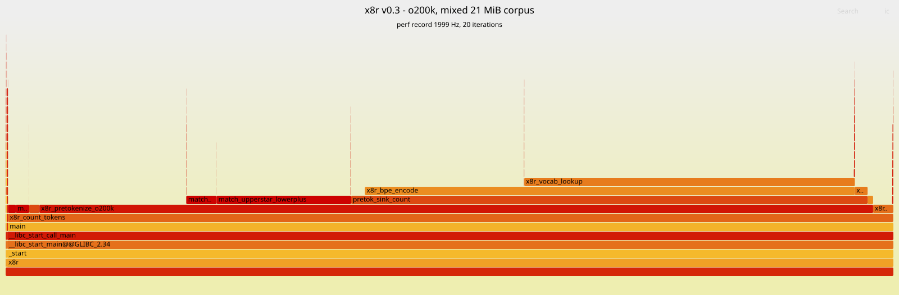
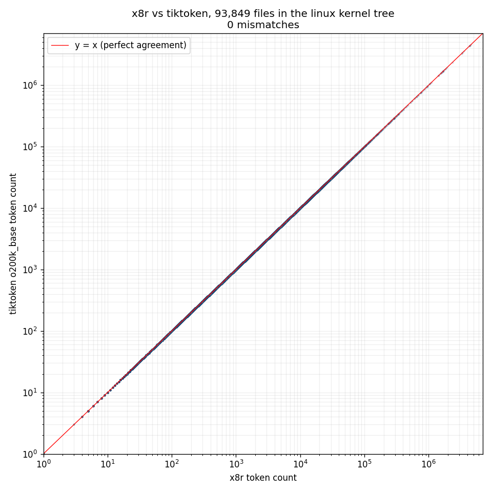

Whitepaper / x8r v0.3
a fast byte-level BPE tokenizer and chunker, in C
C11AVX2cl100k + o200klinux x86_64 bit-exact vs tiktoken on 487M tokens of real source code. 7-16x faster on warm inputs. single-threaded, mmap-backed, no python. tool for LLM agents that call a tokenizer per file and feel it.
Why this exists
LLM coding agents read files in token budgets, not bytes or lines. Every Read tool call has to answer two questions: how many tokens is this file, and if i can only afford N, where do i cut without slicing through a function? Today both questions are answered by python tiktoken in a subprocess loop, which is fine for one-shot use and painful when scanning a monorepo.
x8r is a single-purpose native tool that does this job and nothing else. it implements byte-level BPE tokenization compatible with OpenAI's cl100k and o200k vocabularies, plus a budget-aware chunker on top. the contract is: bytes in, byte offsets and token counts out, bit-exact against tiktoken.
Pipeline
five subsystems, each isolated to its own translation unit:
Pretokenization
Pretokenization is the regex pass that splits raw bytes into "pretokens" before BPE. tiktoken specifies a fixed regex per vocab. for cl100k it looks like 's|'t|'re| ?\p{L}+| ?\p{N}+| ?[^\s\p{L}\p{N}]+|\s+. for o200k it adds CamelCase splitting, drops the standalone contraction rule in favor of a trailing suffix on letter runs, and absorbs / into trailing-punct class.
Most BPE implementations run this as a real regex engine. we don't need to. the character classes are disjoint and recognisable from a byte-level table. for ASCII bytes that's a 256-entry lookup; for UTF-8 codepoints it's a two-stage Unicode class table generated offline.
The hot path scans 32 bytes at a time using AVX2, with PSHUFB sitting in reserve for the next round of work:
the moment a non-ASCII byte appears in the window, we bail to the scalar UTF-8 path for that window only. on real source code this happens rarely, so the AVX2 path stays hot.
Unicode classification
Non-ASCII codepoints need a class lookup. we generate src/unicode_tables.h at build time as a two-stage table: stage1[cp>>8] indexes into stage2[block][cp&0xff], with duplicate 256-byte blocks deduplicated. the result is ~39 KiB of static data with O(1) per-codepoint class.
The classifier is generated from python's regex module, not unicodedata. this distinction matters: tiktoken uses the rust fancy-regex crate, which classifies a small set of unassigned-but-block-allocated codepoints (e.g. U+18D9E) as \p{L}. python's unicodedata.category() calls them Cn. python's regex module agrees with fancy-regex. we picked the right oracle.
Vocab hash
The vocab is ~200K tokens. each token has a byte sequence (typically 1-6 bytes) and a 32-bit rank. we mmap a flat blob produced offline by scripts/dump_cl100k.py / scripts/dump_o200k.py: a power-of-two open-addressed hash table with the keys stored inline in 16-byte buckets, plus a small overflow region for longer keys. FNV-1a 32-bit hash, open addressing with linear probing, load factor 0.38, average probe length ~1.3.
Why not swisstables or a perfect hash? both are real upgrades. we left them on the table because the existing layout is already cache-friendly enough: at load 0.38 with linear probing, ~85% of probes terminate on the first bucket and the next probe is the next cache line. the upside-to-complexity ratio for a static, immutable, page-shared 200K-entry table is modest. we'll revisit if the profile changes.
BPE merge
For each pretoken, classical BPE: start with one token per byte, repeatedly merge the lowest-rank adjacent pair until no merges remain. inherently serial within a pretoken, embarrassingly parallel across them.
Two practical optimizations:
- direct lookup for short pretokens. 1-4 byte pretokens cover most of the corpus on real code (operators, single-char identifiers, whitespace runs). these get a single
x8r_vocab_lookupagainst the byte sequence as a whole. if it hits, emit the rank directly and skip the merge loop. - priority queue, not a sort. the merge loop maintains a doubly-linked list of tokens and a per-pair rank heap. a merge updates two neighbours and re-pushes their adjusted pairs. amortized cost stays sub-quadratic without resorting.
This stage is ~19% of self-time per the flamegraph. tiktoken's core_bpe.rs uses the same shape. we are unlikely to beat it asymptotically; cycle savings here come from cache layout and short-key fast paths.
Boundary-aware chunking
the chunker takes a budget B and produces [start, end) intervals each ≤ B tokens. the trick is to land on a clean boundary instead of mid-function.
- build a cumulative token-count array as a side effect of pretokenization.
- binary-search for the largest prefix with ≤ B tokens.
- walk back through boundary candidates within
tolerance * Btokens, taking the best kind:block>blank>line>hard. - emit, advance the start, repeat.
Currently boundaries are line-based with simple block/blank detection; tree-sitter syntax mode is sketched but disabled. tolerance defaults to 10% of the budget, which is enough on real source files to land on a brace or a blank line almost always.
Profile
flamegraph from a 21 MiB mixed-corpus run, perf record at 1999 Hz, frame pointers on, Comet Lake (i5-10300H):

| function | self time | what it does |
|---|---|---|
x8r_vocab_lookup | 38.07% | FNV-1a + open-addressing probe |
x8r_bpe_encode | 19.24% | per-pretok merge loop |
match_upperstar_lowerplus | 16.93% | o200k CamelCase state machine, alt 1 |
x8r_pretokenize_o200k | 15.89% | top-level pretok driver |
match_upperplus_lowerstar | 4.74% | o200k CamelCase state machine, alt 2 |
pretok_sink_count | 2.44% | token-count accumulator callback |
x8r_scan_ascii_space | 2.06% | AVX2 whitespace scan |
useful mental model: pretok work ~40%, vocab hash ~38%, merge loop ~19%. the AVX2 ASCII fast paths are already too small to be the bottleneck. the highest-leverage future targets are the vocab hash (swisstables-style group probe) and the o200k CamelCase machine (jump tables, branchless backtracking).
Speed
warm, single-threaded, vs tiktoken.encode_ordinary with o200k_base, on Comet Lake (i5-10300H). cold numbers in bench/results.json.
| file | size | x8r | tiktoken | speedup |
|---|---|---|---|---|
| ascii_code_large | 1 MiB | 18.9 ms | 221.7 ms | 11.8x |
| json_large | 1 MiB | 13.9 ms | 227.2 ms | 16.3x |
| markdown_large | 1 MiB | 17.6 ms | 172.6 ms | 9.8x |
| utf8_prose_large | 1 MiB | 15.9 ms | 114.6 ms | 7.2x |
the smallest speedup is on UTF-8 prose, which is exactly where the scalar UTF-8 path runs constantly. that's the corpus where SIMD UTF-8 classification would matter most.
Correctness
three independent oracles agree:
- differential fuzzer (
scripts/fuzz_vs_tiktoken.py): five flavors (ascii_print, ascii_full, utf8_mixed, realcode, edge), 10,000 cases per vocab. bisect-shrinker on disagreement. 0 mismatches on cl100k and o200k. - golden corpus: 12 hand-picked files (code, json, markdown, prose) at three sizes. token counts match tiktoken exactly.
- linux kernel tree: every non-binary file in a shallow clone of
torvalds/linuxtokenized with both tools. 93,849 files, 487 million tokens, byte-exact agreement.

one known divergence, documented inline in src/pretok_o200k.c: a tiny set of unicode codepoints (unassigned, in script-allocated blocks) where tiktoken's public encode_ordinary and its own internal _encode_only_native_bpe disagree with each other. x8r matches the latter. real text never hits this.
Trade-offs and what's not done
| topic | verdict | reasoning |
|---|---|---|
| SIMD UTF-8 decode + classify | later | biggest improvement on prose corpora. needs lemire/keiser validator + PSHUFB-to-class for 2-byte sequences. ~1 week of work. |
| swisstables vocab hash | maybe | would shrink the 38% bucket. complexity vs win is unclear at load 0.38 with linear probing already at ~1.3 probes. |
| perfect hashing (CHD/BBHash) | maybe | vocab is static and immutable. theoretically removes the probe loop entirely. binary-size cost ~2 KiB metadata. |
| AVX-512 path | untested | requires different hardware (current measurement platform is Comet Lake, AVX2 only on this SKU). Not pursued. |
| threading inside one file | no | against the unix philosophy. callers should parallelise across files via xargs -P or a thread pool around libx8r.so. |
| JIT'ing the regex | no | libgccjit setup latency would dwarf the savings on small files. |
| GPU offload | no | PCIe round-trip + kernel launch > entire CPU runtime on 1 MiB inputs. |
| ARM / macOS / Windows | no | linux x86_64 only by design. AVX2 is the baseline. NEON port is feasible but unscoped. |
Build and API
libc only. make produces:
build/x8r- cli, ~120 KB strippedbuild/libx8r.so- shared lib for in-process usebuild/libx8r.a- static lib
Source layout
| path | contents |
|---|---|
include/x8r.h | public C ABI |
src/main.c | cli entry, arg parsing, output formatting |
src/chunk.c | public api, budget search, boundary picker |
src/pretok_scalar.c | cl100k pretokenizer, scalar fallback |
src/pretok_avx2.c | AVX2 ASCII letter / space fast paths |
src/pretok_o200k.c | o200k pretokenizer with CamelCase state machine |
src/bpe.c | merge loop, vocab hash probe |
src/vocab.c | vocab load + mmap |
src/mmap_io.c | mmap + madvise wrapper |
src/unicode_tables.h | generated, codepoint class bits |
vocab/cl100k.bin | 199K tokens, ~2.2 MiB |
vocab/o200k.bin | 200K tokens, ~4.5 MiB |
scripts/ | vocab dump, unicode table gen, fuzzer |
bench/ | cold + warm bench harness |